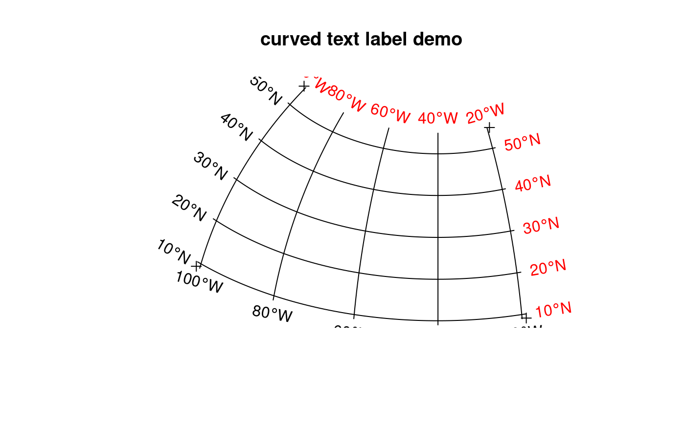

Create N-S and E-W grid lines over a geographic region
gridlines.RdCreate N-S and E-W grid lines over a geographic region; create and plot corresponding labels
gridlines(x, easts = pretty(bbox(x)[1,]), norths = pretty(bbox(x)[2,]), ndiscr = 100) gridat(x, easts = pretty(bbox(x)[1,]), norths = pretty(bbox(x)[2,]), offset = 0.5, side = "WS") # S3 method for SpatialLines labels(object, labelCRS, side = 1:2, ...) # S3 method for SpatialPointsDataFrame text(x, ...)
Arguments
| x | object deriving from class Spatial-class |
|---|---|
| easts | numeric; east-west values for vertical lines |
| norths | numeric; north-south values for horizontal lines |
| ndiscr | integer; number of points used to discretize the line, could be set to 2, unless the grid is (re)projected |
| offset | offset value to be returned, see text |
| object | SpatialLines-class object, as returned by |
| labelCRS | the CRS in which the grid lines were drawn and labels should be
printed; if missing, the CRS from |
| side | for |
| ... | for |
Value
gridlines returns an object of class
SpatialLines-class, with lines as specified; the return
object inherits the projection information of x; gridat
returns a SpatialPointsDataFrame with points at the west and south
ends of the grid lines created by gridlines, with degree
labels.
The labels method for SpatialLines objects returns a
SpatialPointsDataFrame-class object with the parameters needed
to print labels below and left of the gridlines. The locations for
the labels are those of proj4string(object) the labels also
unless labelCRS is given, in which case they are in that CRS.
This object is prepared to be plotted with text:
The text method for SpatialPointsDataFrame puts text labels
on its coordinates, and takes care of attributes pos, labels,
srt and offset; see text.
See also
spTransform; llgridlines in rgdal (recent versions) for plotting long-lat grid over projected data
Examples
text(labels(gridlines(meuse)))title("default gridlines within Meuse bounding box")#> Warning: Discarded datum Amersfoort in CRS definitioncrs.longlat <- CRS("+init=epsg:4326") meuse_ll <- spTransform(meuse, crs.longlat) grd <- gridlines(meuse_ll) grd_x <- spTransform(grd, CRS("+init=epsg:28992"))#> Warning: Discarded datum Amersfoort in CRS definition#> Warning: Discarded datum Amersfoort in CRS definitiontext(grdat_x)#> Warning: Discarded datum Amersfoort in CRS definitiontext(grdat_x)text(labels(grd_x, crs.longlat))# demonstrate axis labels with angle, both sides: sp = SpatialPoints(rbind(c(-101,9), c(-101,55), c(-19,9), c(-19,55)), crs.longlat) laea = CRS("+proj=laea +lat_0=30 +lon_0=-40") sp.l = spTransform(sp, laea) plot(sp.l, expandBB = c(0, 0.05, 0, .05))text(labels(gl, crs.longlat))text(labels(gl, crs.longlat, side = 3:4), col = 'red')title("curved text label demo")# polar: pts=SpatialPoints(rbind(c(-180,-70),c(0,-70),c(180,-89),c(180,-70)), crs.longlat) polar = CRS("+init=epsg:3031") gl = spTransform(gridlines(pts, easts = seq(-180,180,20), ndiscr = 100), polar) plot(spTransform(pts, polar), expandBB = c(.05,0,.05,0))lines(gl)l = labels(gl, crs.longlat, side = 3) l$pos = NULL # pos is too simple, use adj: text(l, adj = c(0.5, -0.5))l = labels(gl, crs.longlat, side = 4) l$srt = 0 # otherwise they end up upside-down text(l)title("grid line labels on polar projection, epsg 3031")